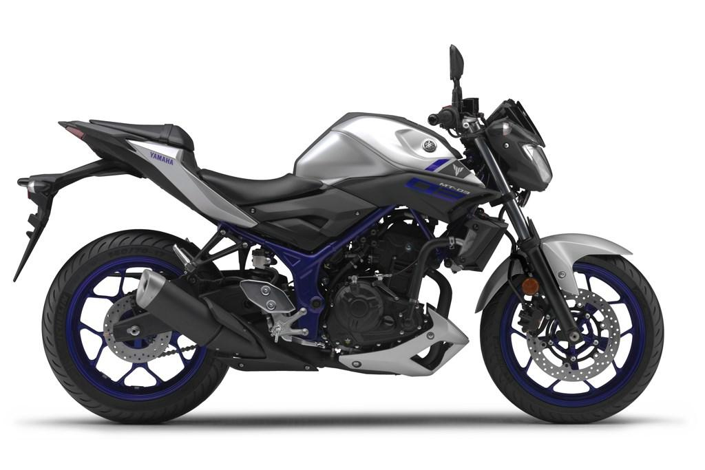

Yamaha MT-07
Yamaha MT-07 olisi ehkä se ykkös valinta itselle pyöräksi, koska se on niin uskomattoman siisti. MT-07 äänet ovat erittäin miehekkäät varsinkin kun putken päivittää parempaan. Pyörän ainut miinus on, että se maksaa paljon enemmän kuin MT-03, vähintäänkin 2000 euroa. Täältä voi ostaa Yamaha MT-07 ja sitä voi muokata omien tarpeiden mukaan.
Elikkä yhteenvetona hyvät puolet pyörästä:
- Tosi nätti
- Ei kuluta liikaa
- Äänet mahtavat
Yamaha MT-03
Yamaha MT-03 on luultavasti pyörä, minkä ostan ensimmäiseksi pyöräkseni, koska se on ihan siistin näköinen, vaikkei yhtä hieno kuin MT-07. Myös hinnaltaan varsin kohtalainen.

Psst! Klikkaa toki kuvasta.
Honda Hornet
Honda CB Hornet 750 on myös ihan menevä pyörä, mutta en itse sitä ostaisi. Hondat on nynnyille, joten sellaista ei kannata ostaa muutenkuin jostai syystä muita vaihtoehtoja ei vain ole saatavilla.
Jos on oikeita rahamiehiä niin silloin ei ole muita vaihtoehtoja, kuin ostaa KTM 500 Supermoto renkailla ja jollain tosi hienolla tarrasarjalla. Kyseinen pyörä on kaikista hienoin, mitä tästä maailmasta löytyy ja muutenkin ihan paras pyörä!!
Vaikka mopoilu onkin siistiä ja hauskaa tehokkailla ja näteillä moottoripyörillä, kannattaa silti ajaa nätisti toi voi käydä näin.